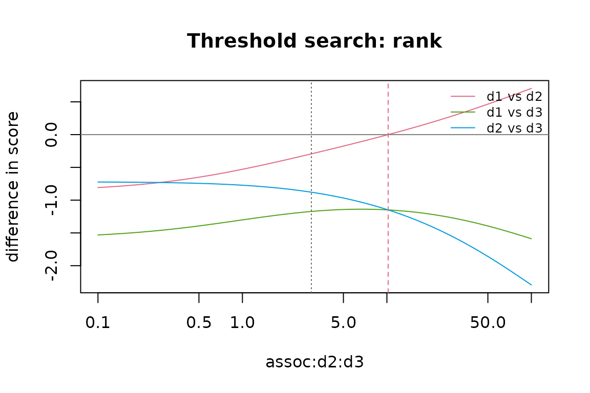

Threshold searches and many diseases
Source:vignettes/thresholds-and-scaling.Rmd
thresholds-and-scaling.RmdThis vignette covers two extensions: threshold searches, which find the input values at which a conclusion changes, and the sampled backend of the global model, for more diseases than can be enumerated.
Threshold searches
cm_threshold() varies one input over a range, with every
other input fixed at the model’s values, and finds the values at which a
conclusion changes. There are four kinds of conclusion:
-
"rank": two diseases swap places, ranked by their contribution to the aggregate (by = "adjusted"ranks by adjusted impact instead); -
"sign": a disease’s adjusted impact crosses zero. This is a sign change implied by the model and its inputs; it is not by itself evidence of a protective effect; -
"total": the aggregate crossestarget, in the units of the impacts; -
"change": the aggregate departs from its value at the model’s own input by the relative amounttarget(e.g.-0.1for a 10% reduction). This answers questions such as “what association strength would reduce the total by 10%?”, which is useful for pairs that are unknown or not listed.
The input is keyed as in cm_sampler():
"assoc:<d1>:<d2>",
"inter:<d1>:<d2>",
"prob:<disease>",
"impact:<disease>", or
"three:<d1>:<d2>:<d3>" for a three-way
ratio. A pair without a numeric measure (independent, unknown or not
listed) is varied as an odds ratio. By default, models with interactions
or three-way terms, and interaction or three-way inputs, use the global
method; otherwise the method is "simultaneous" (set
method to override). Interactions and interaction or
three-way inputs need the global method. With the global method, when
the input is an impact or an interaction (which do not change the joint
distribution), the joint distribution is fitted once and reused, or a
joint from fit_joint() can be passed; other
inputs change the joint distribution, so it is refitted at every
point.
How the search works
The response need not be monotonic, so the range is first scanned on
a grid of n_grid points (log-spaced for odds ratios, risk
ratios and three-way ratios). Each grid point is adjusted and classified
as usable, or by the reason it is not ("infeasible",
"singular", "undefined" for non-finite
results, "unresolved", "unsupported" or
"error"). Each pair of neighbouring usable points on which
the conclusion differs brackets a crossing, which is refined by
bisection. As a result:
- every crossing in the range is reported, not only the first;
- stretches of unusable grid points are listed in
regions, so that “no crossing found” can be told apart from “part of the range could not be evaluated”; - a refined crossing counts as a threshold only if the compared
quantity is close to zero on both sides of the final bracket. A jump
across a pole, such as a nearly singular system, is reported as a
"discontinuity", never as a threshold; - a crossing whose bisection lands on an unusable point is
"unresolved".
Thresholds are deterministic: they refer to the model’s input values,
one input at a time. Statements such as “the probability that d1 ranks
first” need the Monte Carlo tools
(vignette("uncertainty")); probabilistic thresholds are not
implemented.
A relative change in the aggregate
In the Supplementary File example, d1 and d3 are independent (odds ratio 1), and the adjusted aggregate is about 2.109 percent:
m <- example_supplement()
deconflate(m)$totals
#> raw_sum adjusted_total interaction_total
#> 1 2.5 2.109229 0
th <- cm_threshold(m, "assoc:d1:d3", c(1, 50), conclusion = "change", target = -0.1)
th
#> <cm_threshold> change over assoc:d1:d3 in [1, 50] (baseline 1; method simultaneous)
#> Fixed: all inputs other than assoc:d1:d3 at the model's values.
#>
#> Crossings:
#> item status threshold lower upper
#> total threshold 5.264 5.264 5.264
#> description
#> the aggregate falls below the baseline by the target changeAn odds ratio of about 5.26 between d1 and d3 would reduce the aggregate by 10%, to about 1.898. The adjusted results at the two ends of the final bracket are returned:
th$details[[1]]$below
#> disease raw adjusted change estimand adjusted_for
#> 1 d1 2.5 -0.2776063 -1.11104251 crude <NA>
#> 2 d2 5.0 3.5618863 -0.28762274 crude <NA>
#> 3 d3 7.5 6.9589184 -0.07214422 crude <NA>
th$details[[1]]$above
#> disease raw adjusted change estimand adjusted_for
#> 1 d1 2.5 -0.2776063 -1.11104252 crude <NA>
#> 2 d2 5.0 3.5618863 -0.28762274 crude <NA>
#> 3 d3 7.5 6.9589184 -0.07214422 crude <NA>The search works in either direction. The odds ratio of d2 and d3 is 3 in the example; a weaker association, about 1.43, would increase the aggregate by 10%, because less of the raw impacts is then attributed to the associated disease:
cm_threshold(m, "assoc:d2:d3", c(0.2, 20), conclusion = "change", target = 0.1)$thresholds
#> conclusion item status threshold lower upper below
#> 1 change total threshold 1.433331 1.433331 1.433331 1.134299e-09
#> above description
#> 1 -4.971832e-10 the aggregate falls below the baseline by the target changeFor an unknown pair, the simultaneous method cannot compute the baseline, but the global method can: it leaves the pair unconstrained in the maximum-entropy fit. The change is then relative to that fit. Here the fitted distribution implies an odds ratio of about 1.14 for d1 and d3, and an odds ratio of about 6.4 would reduce the aggregate by 10%:
m_unk <- cm_model(
cm_diseases(c("d1", "d2", "d3"), c(0.10, 0.15, 0.20)),
cm_impacts(c("d1", "d2", "d3"), c(2.5, 5, 7.5), units = "%"),
associations = cm_associations(c("d1", "d2"), c("d2", "d3"), c(2, 3)),
missing_associations = "unknown"
)
th_unk <- cm_threshold(m_unk, "assoc:d1:d3", c(1, 50), conclusion = "change",
target = -0.1, method = "global")
th_unk$thresholds[, c("item", "status", "threshold", "description")]
#> item status threshold
#> 1 total threshold 6.364532
#> description
#> 1 the aggregate falls below the baseline by the target changeThe baseline value of an unknown input is NA
(th_unk$baseline).
Rankings
As the association of d2 and d3 strengthens, more of d2’s raw impact is attributed to d3, and d2’s contribution falls. Above an odds ratio of about 10.20, d1 contributes more than d2. Disease d3 contributes most over the whole range:
th_rank <- cm_threshold(m, "assoc:d2:d3", c(0.1, 100), conclusion = "rank", n_grid = 201)
th_rank
#> <cm_threshold> rank over assoc:d2:d3 in [0.1, 100] (baseline 3; method simultaneous)
#> Fixed: all inputs other than assoc:d2:d3 at the model's values.
#>
#> Crossings:
#> item status threshold lower upper description
#> d1 vs d2 threshold 10.2 10.2 10.2 d1 moves above d2 (by contribution)
th_rank$summary
#> item n_thresholds n_other result
#> 1 d1 vs d2 1 0 threshold(s) found
#> 2 d1 vs d3 0 0 none found in the range
#> 3 d2 vs d3 0 0 none found in the rangeplot() shows the compared quantities over the scan (here
the differences in contribution of each pair of diseases), the baseline
value of the input (dotted) and the thresholds (dashed):
plot(th_rank)
Signs
The adjusted impact of d1 is negative when its raw impact is below about 0.374 percent:
th_sign <- cm_threshold(m, "impact:d1", c(-5, 5), conclusion = "sign", diseases = "d1")
th_sign$thresholds[, c("item", "status", "threshold", "description")]
#> item status threshold
#> 1 d1 threshold 0.374142
#> description
#> 1 the adjusted impact of d1 becomes positive (a model-implied sign change)Below that value, the raw impact of d1 is smaller than its associated diseases alone would produce under the additive model. This says that the inputs are inconsistent with the model there (or the estimands are not what they were assumed to be), not that d1 is protective.
cm_threshold() searches with the methods of
deconflate() ("simultaneous" or
"global"). The published approximation,
m^2 / (m + c), kept for comparison only, behaves
differently: it has a pole where its denominator is zero, here at a raw
impact of d1 of about -0.527, and its adjusted impact changes sign there
by jumping through infinity. compare_methods() shows this
on either side of the pole:
pop_s <- cm_population(
cm_diseases(c("d1", "d2", "d3"), c(0.10, 0.15, 0.20)),
cm_associations(c("d1", "d2"), c("d2", "d3"), c(2, 3), measure = "OR")
)
sapply(c(-0.60, -0.45), function(v) {
mv <- cm_model(pop_s, cm_impacts(c("d1", "d2", "d3"), c(v, 5, 7.5)))
unlist(compare_methods(mv, methods = c("published", "simultaneous"))$impacts[1, -1])
})
#> [,1] [,2]
#> raw -0.6000000 -0.4500000
#> published -4.9068328 2.6424676
#> simultaneous -0.9821118 -0.8308846A search across such a pole reports a "discontinuity",
not a threshold.
A target in the units of the impacts
What raw impact of d2 would make the aggregate 3 percent (about 13.04)?
th_total <- cm_threshold(m, "impact:d2", c(0, 20), conclusion = "total", target = 3)
th_total$thresholds[, c("item", "status", "threshold", "description")]
#> item status threshold description
#> 1 total threshold 13.03899 the aggregate rises above the targetRanges that cannot be fully evaluated
A probability of 1 or more is impossible, so the grid points from just above 1 are listed as an infeasible region. Below 1, d1 moves above d2 at a prevalence of about 0.224 and above d3 at about 0.622; d2 and d3 do not swap where the range could be evaluated:
th_prob <- cm_threshold(m, "prob:d1", c(0.05, 1.5), conclusion = "rank")
th_prob
#> <cm_threshold> rank over prob:d1 in [0.05, 1.5] (baseline 0.1; method simultaneous)
#> Fixed: all inputs other than prob:d1 at the model's values.
#> 35 of 101 grid points could not be used:
#> from to status n_points
#> 1.007 1.5 infeasible 35
#>
#> Crossings:
#> item status threshold lower upper description
#> d1 vs d2 threshold 0.2236 0.2236 0.2236 d1 moves above d2 (by contribution)
#> d1 vs d3 threshold 0.6221 0.6221 0.6221 d1 moves above d3 (by contribution)
th_prob$summary
#> item n_thresholds n_other result
#> 1 d1 vs d2 1 0 threshold(s) found
#> 2 d1 vs d3 1 0 threshold(s) found
#> 3 d2 vs d3 0 0 none found where the range could be evaluatedMany diseases
What limits the number of diseases
The "simultaneous" method (and the published
approximation in compare_methods()) uses the pairwise 2x2
tables only. It never enumerates combinations of diseases, so it works
for any number of diseases (the default triple screen checks
n(n-1)(n-2)/6 triples; the exact LP feasibility check is limited to 14
diseases).
The "global" method needs the joint distribution of
disease combinations, for interactions, unknown pairs and three-way
terms, and so do the snapshot hazard-ratio model and
attributable_risk(). The exact backend of
fit_joint() enumerates all 2^n combinations, which limits
it to about 20 diseases (max_diseases). For more,
fit_joint(backend = "sampled") fits the same
maximum-entropy model without enumeration.
The sampled backend
The sampled backend works in three steps:
-
Calibration. The model has a main effect for each
disease and an interaction parameter for each constrained pair
(three-way terms are fixed at the log of their ratios). Many parallel
Gibbs chains (
n_chains) estimate the disease probabilities and pairwise tables implied by the current parameters, and the parameters are updated by the differences between the target and estimated logits and log odds ratios, until the estimates match the targets within Monte Carlo error. The interaction parameters are conditional log odds ratios, given the other diseases. They are calibrated, not set to the marginal log odds ratios of the inputs, which are only their starting values: with several associated diseases, the two differ. -
Sampling.
n_samplescombinations are drawn from the calibrated model. -
Raking (
calibrate = TRUE, the default). The weights of the sampled combinations are adjusted by iterative proportional fitting so that the disease probabilities and pairwise tables match the targets exactly on the sample. The remaining Monte Carlo error affects only the higher-order structure (triples and beyond).
The result has the same form as an exact fit (the distinct sampled
combinations and their weights), so the global method, interaction
offsets, Shapley allocation, the snapshot hazard model and
attributable_risk() use it unchanged. Its
diagnostics report:
- the constraint residual of the raw sample and after raking;
- R-hat and effective sample sizes of the fitted probabilities and pairwise tables, from the spread between chains;
- Monte Carlo standard errors of these moments.
A sampled fit is an approximation with Monte Carlo error. Check it against the exact backend on smaller systems where that is possible, and compare fits with different seeds.
Three diseases: sampled and exact
je <- fit_joint(m)
js <- fit_joint(m, backend = "sampled", n_samples = 20000, n_chains = 500, seed = 11)
js
#> <cm_joint> 3 diseases, 8 combinations (sampled backend)
#> Converged: TRUE after 17 calibration iterations (max residual 1.08e-11)
#> Constrained pairs: 3
#> Sample: 20000 draws from 500 chains, 8 distinct combinations
#> Constraint residual: 9.55e-03 in the sample, 1.08e-11 after raking; max R-hat 1.002; min ESS 16763
js$diagnostics$summary
#> n_samples n_chains n_unique fit_iterations fit_converged residual_sample
#> 1 20000 500 8 17 TRUE 0.00955
#> residual_calibrated max_rhat min_ess max_mcse
#> 1 1.083127e-11 1.002484 16763.48 0.003019871
js$diagnostics$moments
#> moment target sampled residual mcse rhat ess
#> 1 prob:d1 0.10000000 0.10175 0.0017500000 0.0021830957 1.0005498 19177.24
#> 2 prob:d2 0.15000000 0.15955 0.0095500000 0.0028188627 1.0023811 16875.66
#> 3 prob:d3 0.20000000 0.20410 0.0041000000 0.0030198707 1.0015774 17812.50
#> 4 pair:d1:d2 0.02447939 0.02425 -0.0002293925 0.0011375249 1.0012028 18286.41
#> 5 pair:d1:d3 0.02000000 0.01955 -0.0004500000 0.0009591324 0.9994854 20836.04
#> 6 pair:d2:d3 0.05672700 0.05945 0.0027229966 0.0018263532 1.0024836 16763.48The probabilities of the eight combinations, exact and sampled:
cmb <- merge(combination_probs(je), combination_probs(js),
by = c("d1", "d2", "d3", "n_diseases"), suffixes = c("_exact", "_sampled"))
cmb[order(-cmb$prob_exact), ]
#> d1 d2 d3 n_diseases prob_exact prob_sampled
#> 1 0 0 0 0 0.642622560 0.642671624
#> 2 0 0 1 1 0.131856833 0.131807768
#> 3 0 1 0 1 0.077377440 0.077328376
#> 5 1 0 0 1 0.064104444 0.064055379
#> 4 0 1 1 2 0.048143167 0.048192232
#> 7 1 1 0 2 0.015895556 0.015944621
#> 6 1 0 1 2 0.011416164 0.011465228
#> 8 1 1 1 3 0.008583836 0.008534772A second seed gives a different sample; the differences between seeds show the size of the Monte Carlo error. The distribution of the number of diseases per animal:
js2 <- fit_joint(m, backend = "sampled", n_samples = 20000, n_chains = 500, seed = 12)
by_n <- function(j) tapply(j$prob, rowSums(j$cells), sum)
rbind(exact = by_n(je), seed_11 = by_n(js), seed_12 = by_n(js2))
#> 0 1 2 3
#> exact 0.6426226 0.2733387 0.07545489 0.008583836
#> seed_11 0.6426716 0.2731915 0.07560208 0.008534772
#> seed_12 0.6426916 0.2731317 0.07566194 0.008514817With an interaction, the global method depends on probabilities of disease triples, which the sampled fit approximates:
mi <- set_interaction(m, "d1", "d2", 1)
rbind(exact = deconflate(mi, method = "global", joint = je)$adjusted$adjusted,
sampled = deconflate(mi, method = "global", joint = js)$adjusted$adjusted)
#> [,1] [,2] [,3]
#> exact 1.913880 3.240641 6.935621
#> sampled 1.913888 3.240574 6.935939A fitted joint can be passed to deconflate(),
deconflate_hr(), compare_methods() and
attributable_risk() with joint. Alternatively,
the fitting arguments can be passed through ..., e.g.
deconflate(m, method = "global", backend = "sampled", n_samples = 20000, seed = 1).
Unresolved is not infeasible
If the calibration does not converge, or the raking does not match
the targets, the fit is reported as unresolved: converged
is FALSE, a warning of class
deconflate_nonconvergence is given, and
deconflate() refuses to use the fit. This does not show
that the inputs are infeasible: more samples, chains or iterations may
resolve it. check_feasibility() tests feasibility directly.
Here the inputs are infeasible, which the triple screen shows:
bad <- cm_population(cm_diseases(c("a", "b", "c"), c(0.5, 0.5, 0.5)),
cm_associations(c("a", "a", "b"), c("b", "c", "c"), c(20, 20, 0.05)))
jb <- fit_joint(bad, backend = "sampled", n_samples = 2000, n_chains = 100,
fit_iter = 20, seed = 1)
#> Warning: The sampled joint distribution is unresolved (calibration did not
#> converge; sample residual 2.67e-01; raking residual 1.64e-01). This does not
#> show that the inputs are infeasible; try more samples, chains or iterations, or
#> check_feasibility().
jb$converged
#> [1] FALSE
check_feasibility(bad, method = "triples")
#> <cm_feasibility> NOT jointly feasible [triples]
#>
#> Conflicting triples:
#> disease1 disease2 disease3 gap
#> a b c 0.226Twenty-four diseases
A synthetic population of 24 diseases with prevalences from 0.05 to 0.3, an odds ratio of 2 between consecutive diseases (x01 with x02, x02 with x03, and so on; all other pairs independent) and raw impacts from 1 to 5 percent:
ids <- sprintf("x%02d", 1:24)
pop24 <- cm_population(
cm_diseases(ids, seq(0.05, 0.3, length.out = 24)),
cm_associations(ids[-24], ids[-1], 2)
)
m24 <- cm_model(pop24, cm_impacts(ids, seq(1, 5, length.out = 24), units = "%"))The exact backend would need 2^24 (about 16.8 million) combinations and refuses:
tryCatch(fit_joint(pop24), deconflate_error = function(e) conditionMessage(e))
#> [1] "24 diseases give 2^24 cells; use backend = \"sampled\", or increase `max_diseases` if intended."The sampled fit:
j24 <- fit_joint(pop24, backend = "sampled", n_samples = 20000, n_chains = 500, seed = 3)
j24
#> <cm_joint> 24 diseases, 11902 combinations (sampled backend)
#> Converged: TRUE after 17 calibration iterations (max residual 7.92e-11)
#> Constrained pairs: 276
#> Sample: 20000 draws from 500 chains, 11902 distinct combinations
#> Constraint residual: 1.06e-02 in the sample, 7.92e-11 after raking; max R-hat 1.005; min ESS 14809
j24$diagnostics$summary
#> n_samples n_chains n_unique fit_iterations fit_converged residual_sample
#> 1 20000 500 11902 17 TRUE 0.0106413
#> residual_calibrated max_rhat min_ess max_mcse
#> 1 7.921988e-11 1.004523 14809.15 0.003494783
by_n(j24)
#> 0 1 2 3 4 5
#> 1.638581e-02 6.089480e-02 1.312900e-01 1.809753e-01 1.929059e-01 1.715441e-01
#> 6 7 8 9 10 11
#> 1.168930e-01 6.859365e-02 3.536791e-02 1.596657e-02 6.176876e-03 2.114325e-03
#> 12 13 14 15
#> 6.615586e-04 1.418021e-04 3.669966e-05 5.182282e-05Without interactions, the global method uses the pairwise tables only. Raking matches every pairwise table exactly on the sample (including the independent pairs, which are constrained to an odds ratio of 1), so the global result equals the simultaneous one up to the raking tolerance:
r_sim <- deconflate(m24)
r_glob <- deconflate(m24, method = "global", joint = j24)
max(abs(r_glob$adjusted$adjusted - r_sim$adjusted$adjusted))
#> [1] 1.021933e-09
c(simultaneous = r_sim$totals$adjusted_total, global = r_glob$totals$adjusted_total)
#> simultaneous global
#> 11.9101 11.9101An interaction (1 percentage point when x12 and x13 occur together) needs the probabilities of disease triples, so it uses the sampled distribution beyond its pairwise tables:
m24i <- set_interaction(m24, "x12", "x13", 1)
r_int <- deconflate(m24i, method = "global", joint = j24)
near <- ids[10:15]
data.frame(disease = near,
raw = r_glob$adjusted$raw[match(near, ids)],
no_interaction = r_glob$adjusted$adjusted[match(near, ids)],
interaction = r_int$adjusted$adjusted[match(near, ids)])
#> disease raw no_interaction interaction
#> 1 x10 2.565217 2.131149 2.130591
#> 2 x11 2.739130 2.257329 2.257990
#> 3 x12 2.913043 2.382451 2.132485
#> 4 x13 3.086957 2.506642 2.273895
#> 5 x14 3.260870 2.630017 2.631250
#> 6 x15 3.434783 2.752682 2.750201
r_int$totals
#> raw_sum adjusted_total interaction_total
#> 1 14.77391 11.87258 0.04696013The adjusted impacts of x12 and x13 fall, because part of their raw impacts is now attributed to the interaction; the other diseases change little. These values carry Monte Carlo error from the sampled triples. In an analysis, refit the joint distribution with another seed (or more samples) and check that the conclusions do not change.
The run time of a sampled fit grows with n_samples and
n_chains, and that of the raking step with the number of
constrained pairs (every pair that is specified or independent by
default) times the number of distinct sampled combinations.